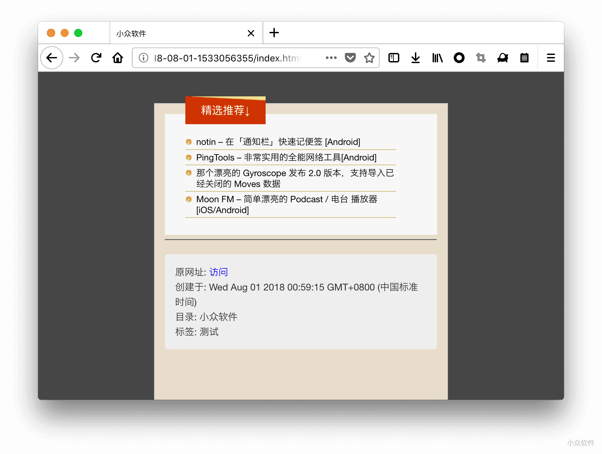
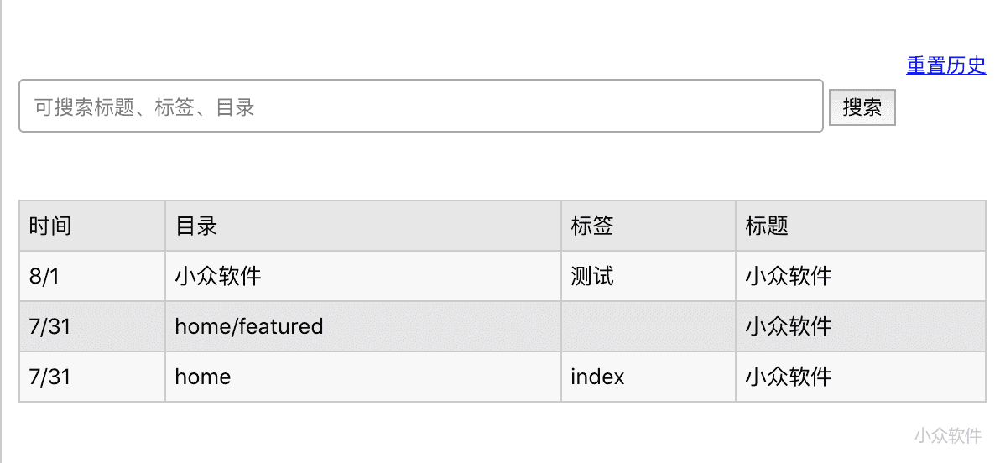

收藏
收藏11 (2 votes)
(2 votes)
 Loading...
Loading...
青小蛙 on 2018/08/01 10:18:00.
MaoXian Web Clipper 是一个十分不同的网页剪辑工具，它能够完全将你要的内容保存在本地，并且以 HTML / Markdown 的格式保存起来，只要文件不丢，内容就不会丢失。@Appinn

来自发现频道，感谢 @laoquans 的推荐。
MaoXian Web Clipper 最大的特点是它会直接下载你选中的网页剪辑，然后保存为 HTML 文件，非常的赞。
保存下载的所有文件都位于 下载/mx-wc 路径下面，格式是这个样子的：

而里面的 home、featured 都是可以自定义的，当你选中范围以后，点击 回车 键，就会出现一个详情页面，你需要填写标题、目录、标签。
而这个 home、featured 就是目录了，并且支持使用 / 来创建子目录，支持中文。

保存格式支持 HTML 与 Markdown 两种，而剪辑效果是这样的：

整个网页位于本地，包括图片，不怕网络原因导致的丢失，只要硬盘不坏就好了 😂
另外，MaoXian Web Clipper 还有一个简单的检索页面：

支持通过标题、标签与目录进行搜索，唯一的遗憾可能是不能自行添加备注了。
MaoXian Web Clipper 的功能和特点：
你只需要带着电脑上的 mx-wc 文件夹（位于浏览器默认下载路径下），就能带着所有网页剪辑去任何地方了。
使用时需要注意，MaoXian Web Clipper 会一次下载很多文件，别被吓到了，另外开发者建议关闭“每次下载都询问文件名”。如果你想要改变默认下载路径，可以看这里。
嗯，青小蛙要给个精选。
项目主页在这里，Chrome 商店（.crx 下载） | Firefox 商店
最后，开发者其实使用了「剪藏」这个词，青小蛙则习惯于使用「剪辑」，那么应该用哪个呢？
×用微信扫描并分享
![方片收集 – 收集一条灵感仅需 0.13 秒[Web/iPhone/Android]](assets/6e46e86db0860550dadeb3d19f81174a.png) 方片收集 – 收集一条灵感仅需 0.13 秒[Web/iPhone/Android]
方片收集 – 收集一条灵感仅需 0.13 秒[Web/iPhone/Android]![Sunset 微日记 – 列表式日记与想法收集应用 [iPad/iPhone]](assets/6ea17abaf69ea15a00c71bbdb3b98fdb.png) Sunset 微日记 – 列表式日记与想法收集应用 [iPad/iPhone]
Sunset 微日记 – 列表式日记与想法收集应用 [iPad/iPhone]![Notebook Web Clipper – Zoho Notebook 收集网页、文字、图片插件[Chrome]](assets/2d271cb2424fde551a04b261abe74ef8.jpg) Notebook Web Clipper – Zoho Notebook 收集网页、文字、图片插件[Chrome]
Notebook Web Clipper – Zoho Notebook 收集网页、文字、图片插件[Chrome]← 还在用 X多多 买仿货？来试试从品牌电商拼团的「合意购」吧
我爱新鲜 – 帮你记录食品、物品「保质期」[微信小程序] →
原网址: 访问
创建于: Fri Aug 03 2018 19:04:50 GMT+0800 (中国标准时间)
目录: default
标签: 无